CYLINDER BLOCK > INSPECTION |
| 1. INSPECT CYLINDER BLOCK SUB-ASSEMBLY |
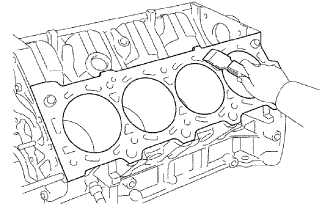 |
Clean the cylinder block.
Using a gasket scraper, remove all the gasket material from the top surface of the cylinder block.
Using a soft brush and solvent, thoroughly clean the cylinder block.
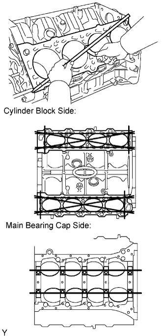 |
Using a precision straightedge and feeler gauge, measure the surfaces contacting the cylinder head and main bearing cap for warpage.
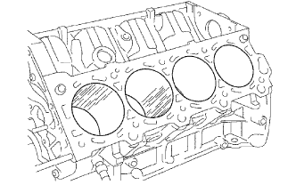 |
Visually check the cylinder for vertical scratches.
If deep scratches are present, rebore all 8 cylinders and replace all 8 pistons. If necessary, replace the cylinder block.
| 2. INSPECT CYLINDER BORE |
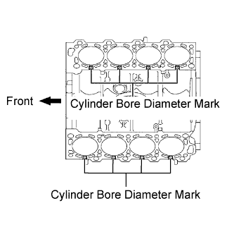 |
Inspect the cylinder bore diameter.
 |
Using a cylinder gauge, measure the cylinder bore diameter at positions A, B and C in the thrust and axial directions.
| Position | Specified Condition |
| A | 10 mm (0.394 in.) from top edge |
| B | Center |
| C | 10 mm (0.394 in.) from bottom edge |
| Number Mark | Specified Condition |
| Mark 1 | 94.002 to 94.010 mm (3.70087 to 3.70118 in.) |
| Mark 2 | 94.011 to 94.020 mm (3.70122 to 3.70157 in.) |
| Mark 3 | 94.021 to 94.028 mm (3.70161 to 3.70189 in.) |
| 3. INSPECT PISTON SUB-ASSEMBLY WITH PIN |
Clean the piston.
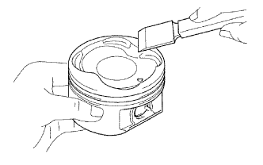 |
Using a gasket scraper, remove the carbon from the piston top.
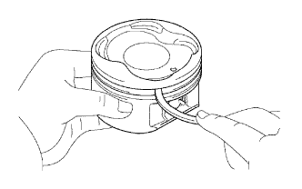 |
Using a groove cleaning tool or broken ring, clean the piston ring grooves.
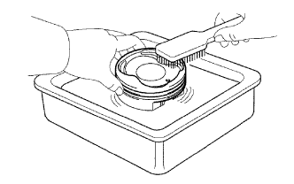 |
Using solvent and a brush, thoroughly clean the piston.
Inspect the piston diameter.
 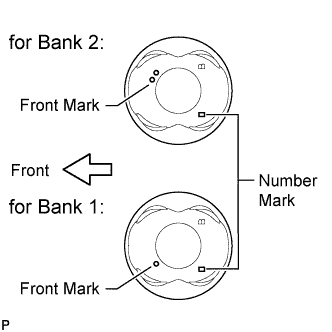 |
Using a micrometer, measure the piston diameter at a position that is 6.7 mm (0.264 in.) downward from the center of the piston pin hole (refer to the illustration).
| Piston | Specified Condition |
| STD | 93.968 to 93.996 mm (3.670 to 3.701 in.) |
| O/S (0.50) | 94.468 to 94.496 mm (3.719 to 3.720 in.) |
| Number Mark | Specified Condition |
| Mark 1 | 93.942 to 93.952 mm (3.6985 to 3.6989 in.) |
| Mark 2 | 93.952 to 93.960 mm (3.6989 to 3.6992 in.) |
| Mark 3 | 93.960 to 93.970 mm (3.6992 to 3.6996 in.) |
| 4. INSPECT PISTON OIL CLEARANCE |
Measure the cylinder bore diameter in the thrust directions.
Subtract the piston diameter measurement from the cylinder bore diameter measurement.
| 5. INSPECT RING GROOVE CLEARANCE |
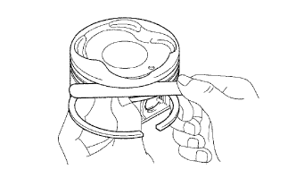 |
Inspect the piston ring groove clearance.
Using a feeler gauge, measure the clearance between a new piston ring and the wall of the ring groove.
| Piston Ring | Specified Condition |
| No. 1 | 0.030 to 0.080 mm (0.00118 to 0.00315 in.) |
| No. 2 | 0.020 to 0.060 mm (0.000787 to 0.00236 in.) |
| 6. INSPECT PISTON RING END GAP |
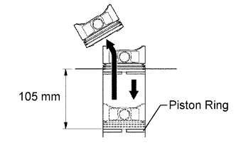 |
Insert the piston ring into the cylinder bore.
Using a piston, push the piston ring a little beyond the bottom of the ring travel, 105 mm (4.13 in.) from the top of the cylinder block.
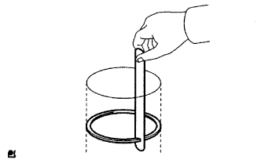 |
Using a feeler gauge, measure the end gap.
| Piston Ring | Specified Condition |
| No. 1 piston ring | 0.300 to 0.400 mm (0.0118 to 0.0157 in.) |
| No. 2 piston ring | 0.400 to 0.550 mm (0.0157 to 0.0217 in.) |
| Oil ring (Side rail) | 0.130 to 0.380 mm (0.00512 to 0.0150 in.) |
| Piston Ring | Specified Condition |
| No. 1 piston ring | 1.10 mm (0.0433 in.) |
| No. 2 piston ring | 1.30 mm (0.0512 in.) |
| Oil ring (Side rail) | 0.90 mm (0.0354 in.) |
| 7. INSPECT PISTON PIN OIL CLEARANCE |
Check each mark on the piston and connecting rod.
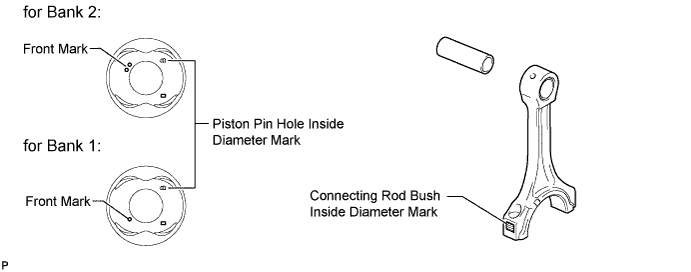
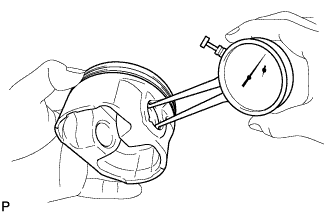 |
Using a caliper gauge, measure the inside diameter of the piston pin hole.
| Mark | Specified Condition |
| A | 21.998 to 22.001 mm (0.86606 to 0.86618 in.) |
| B | 22.002 to 22.004 mm (0.86622 to 0.86630 in.) |
| C | 22.005 to 22.007 mm (0.86634 to 0.86642 in.) |
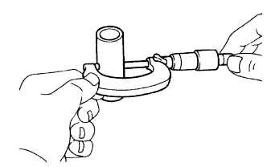 |
Using a micrometer, measure the piston pin diameter.
| Piston Pin | Specified Condition |
| A | 21.997 to 22.000 mm (0.86602 to 0.86614 in.) |
| B | 22.001 to 22.003 mm (0.86618 to 0.86626 in.) |
| C | 22.004 to 22.006 mm (0.86630 to 0.86638 in.) |
Subtract the piston pin diameter measurement from the piston pin hole diameter measurement.
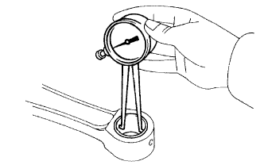 |
Using a caliper gauge, measure the inside diameter of the connecting rod bush.
| Bush | Specified Condition |
| A | 22.005 to 22.008 mm (0.86633 to 0.86646 in.) |
| B | 22.009 to 22.011 mm (0.86650 to 0.86657 in.) |
| C | 22.012 to 22.014 mm (0.86661 to 0.86669 in.) |
Subtract the piston pin diameter measurement from the bush inside diameter measurement.
| 8. INSPECT CONNECTING ROD SUB-ASSEMBLY |
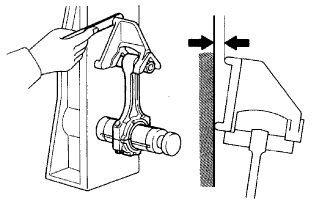 |
Using a rod aligner and feeler gauge, check the connecting rod alignment.
Check if the connecting rod is bent.
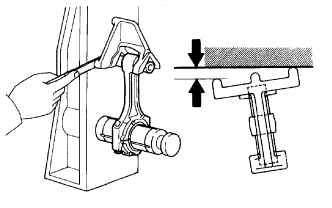 |
Check if the connecting rod is twisted.
| 9. INSPECT CRANKSHAFT |
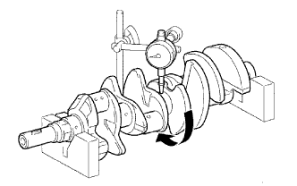 |
Inspect for circle runout.
Place the crankshaft on V-blocks.
Using a dial indicator, measure the circle runout at the center journal.
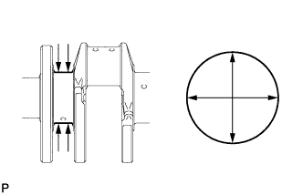 |
Inspect the main journals.
Using a micrometer, measure the diameter of each main journal.
Check each main journal for taper and out of round as shown in the illustration.
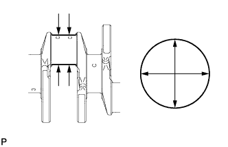 |
Inspect the crank pins.
Using a micrometer, measure the diameter of each crank pin.
Check each crank pin for taper and out of round as shown in the illustration.
| 10. INSPECT CRANKSHAFT OIL CLEARANCE |
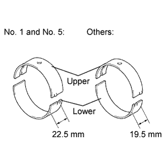 |
Clean each crankshaft journal and bearing.
Check each crankshaft journal and bearing for pitting and scratches.
If the journal or bearing is damaged, replace the bearings. If necessary, replace the crankshaft.
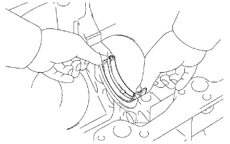 |
Align the bearing claw with the claw groove of the cylinder block, and push in the 5 upper bearings.
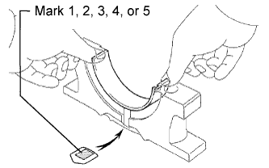 |
Align the bearing claw with the claw groove of the crankshaft bearing cap, and push in the 5 lower bearings.
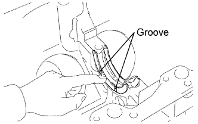 |
Apply engine oil to the thrust washer set.
Install the 2 thrust washers under the No. 3 journal position of the cylinder block with the oil grooves facing outward.
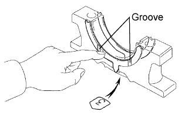 |
Install the 2 thrust washers on the No. 3 crankshaft bearing cap with the grooves facing outward.
Place the crankshaft on the cylinder block.
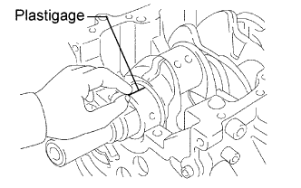 |
Lay a strip of Plastigage across each journal.
 |
Examine the front mark and number, and install the 5 crankshaft bearing caps to the cylinder block.
Apply a light coat of engine oil to the threads and under the heads of the crankshaft bearing cap bolts.
Install the 10 crankshaft bearing cap bolts.
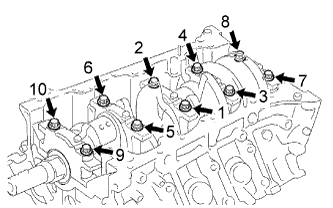 |
Uniformly tighten the 10 crankshaft bearing cap bolts in several passes in the sequence shown in the illustration.
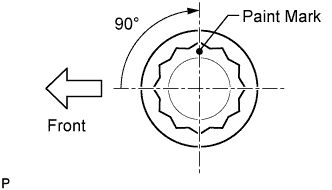 |
Mark the front of the crankshaft bearing cap bolts with paint.
Tighten the crankshaft bearing cap bolts 90° as shown in the illustration.
Check that the painted marks are now at a 90° angle to the front.
 |
Uniformly loosen and remove the 10 crankshaft bearing cap bolts in the sequence shown in the illustration.
 |
Using 2 screwdrivers, gradually pry up and remove the 5 crankshaft bearing caps, 5 lower bearings and 2 lower thrust washers (No. 3 crankshaft bearing cap only).
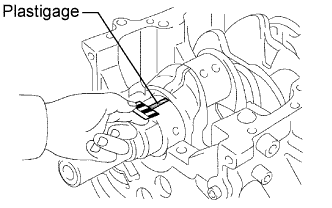 |
Measure the Plastigage at its widest point.
| Number Mark | Specified Condition |
| No. 1 and No. 5 | 0.028 to 0.046 mm (0.00110 to 0.00181 in.) |
| Other | 0.040 to 0.058 mm (0.00157 to 0.00228 in.) |
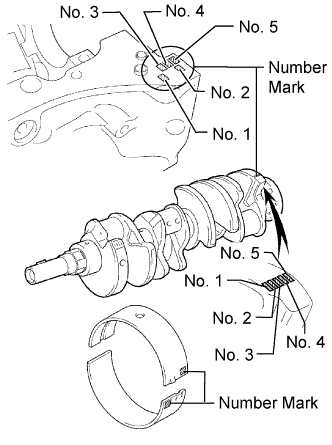 |
| (A) + (B) | No. 1 and No. 5 Journal | Other Journal |
| 0 to 6 | 3 | 1 |
| 6 to 11 | 4 | 2 |
| 12 to 17 | 5 | 3 |
| 18 to 23 | 6 | 4 |
| 24 to 28 | 7 | 5 |
| Number Mark | Specified Condition |
| Mark 00 | 72.000 mm (2.83465 in.) |
| Mark 01 | 72.001 mm (2.83469 in.) |
| Mark 02 | 72.002 mm (2.83472 in.) |
| Mark 03 | 72.003 mm (2.83476 in.) |
| Mark 04 | 72.004 mm (2.83480 in.) |
| Mark 05 | 72.005 mm (2.83484 in.) |
| Mark 06 | 72.006 mm (2.83488 in.) |
| Mark 07 | 72.007 mm (2.83492 in.) |
| Mark 08 | 72.008 mm (2.83496 in.) |
| Mark 09 | 72.009 mm (2.83500 in.) |
| Mark 10 | 72.010 mm (2.83504 in.) |
| Mark 11 | 72.011 mm (2.83508 in.) |
| Mark 12 | 72.012 mm (2.83512 in.) |
| Mark 13 | 72.013 mm (2.83516 in.) |
| Mark 14 | 72.014 mm (2.83520 in.) |
| Mark 15 | 72.015 mm (2.83524 in.) |
| Mark 16 | 72.016 mm (2.83528 in.) |
| Number Mark | Specified Condition |
| Mark 00 | 67.000 mm (2.63780 in.) |
| Mark 01 | 66.999 mm (2.63776 in.) |
| Mark 02 | 66.998 mm (2.63772 in.) |
| Mark 03 | 66.997 mm (2.63768 in.) |
| Mark 04 | 66.996 mm (2.63764 in.) |
| Mark 05 | 66.995 mm (2.63760 in.) |
| Mark 06 | 66.994 mm (2.63756 in.) |
| Mark 07 | 66.993 mm (2.63752 in.) |
| Mark 08 | 66.992 mm (2.63748 in.) |
| Mark 09 | 66.991 mm (2.63744 in.) |
| Mark 10 | 66.990 mm (2.63740 in.) |
| Mark 11 | 66.989 mm (2.63736 in.) |
| Mark 12 | 66.988 mm (2.63732 in.) |
| Number Mark | Specified Condition |
| Mark 1 | 2.481 to less than 2.484 mm (0.0977 to less than 0.0978 in.) |
| Mark 2 | 2.484 to less than 2.487 mm (0.0978 to less than 0.0979 in.) |
| Mark 3 | 2.487 to less than 2.490 mm (0.0979 to less than 0.0980 in.) |
| Mark 4 | 2.490 to less than 2.493 mm (0.0980 to less than 0.0981 in.) |
| Mark 5 | 2.493 to less than 2.496 mm (0.0981 to less than 0.0983 in.) |
| Mark 6 | 2.496 to less than 2.499 mm (0.0983 to less than 0.0984 in.) |
| Mark 7 | 2.499 to less than 2.502 mm (0.0984 to less than 0.0985 in.) |
Completely remove the Plastigage.
Perform the inspection above for each journal.
| 11. INSPECT CONNECTING ROD BOLT |
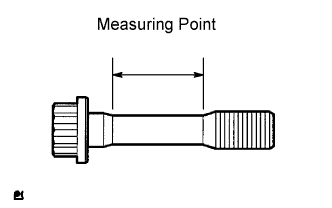 |
Using a vernier caliper, measure the tension portion of the connecting rod bolt.
| 12. INSPECT CRANKSHAFT BEARING CAP BOLT |
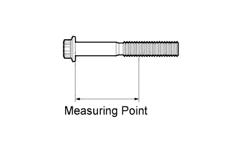 |
Using a vernier caliper, measure the thread outside diameter of the main bearing cap bolt.
| 13. INSPECT NO. 1 OIL NOZZLE SUB-ASSEMBLY |
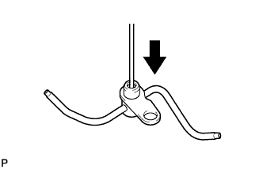 |
Push the check valve with a pin to check if it is stuck.
If stuck, replace the oil nozzle sub-assembly.
Push the check valve with a pin to check if it moves smoothly.
If it does not move smoothly, clean or replace the No. 1 oil nozzle sub-assembly.
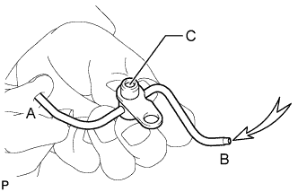 |
While covering A, apply air into B. Check that air does not leak through C. Perform the check again while covering B and applying air into A.
If air leaks, clean or replace the No. 1 oil nozzle sub-assembly.
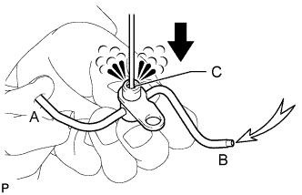 |
Push the check valve while covering A, and apply air into B. Check that air passes through C. Perform the check again while covering B, pushing the check valve and applying air into A.
If air does not pass through C, clean or replace the No. 1 oil nozzle sub-assembly.